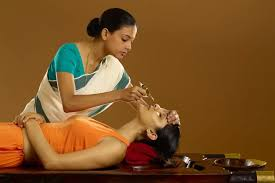

නස්ය කර්මය | Nasya Karma

සන්ධි වේදනා ප්රතිකාර

ජීවායු වෙද මැදුරේ දී කටී වස්ති සිදු කළ අවස්තාවක්
සෑම ප්රතිකාරයකම දර්ශනීය රූප
නස්ය කර්මය | Nasya Karma
සන්ධි වේදනා ප්රතිකාර
ජීවායු වෙද මැදුරේ දී කටී වස්ති සිදු කළ අවස්තාවක්
හිස ආශ්රිත රෝග සඳහා ප්රතිකාර.
පාරම්පරික තෙල් සහ පොට්ටනි ප්රතිකාර.
ශරීර පවිත්රතාවය සහ විෂ හරණය.
කේරල ප්රතිකාරයකි. විශේෂිත වූ කූඩැල්ලන් මේ සදහා යොදා ගනී. මෙම චිකිත්සාව ප්රධාන වශයෙන් භාවිතා කරනුයේ ආයුර්වේද මූලධර්මවල රුධිරය (රක්ත ධාතු) සමඟ සමීපව සම්බන්ධ වන පිත්ත දෝෂය සමතුලිත කිරීම සඳහා ය. එය පංචකර්මයේ ප්රධාන විෂ ඉවත් කිරීමේ ක්රියා පටිපාටි පහෙන් එකක් ලෙස සැලකේ, විශේෂයෙන් රුධිර සංසරණ පද්ධතිය, සම සහ දැවිල්ල ආශ්රිත තත්වයන් සඳහා. .
.jpg)
කේරල ප්රතිකාරයකි. මෙමගින් ආතරයිටිස්, කටී ශූල, ඇතූලු වාත වේදනා සදහා සාර්ථක විසදුම් ලබා ගත හැක.
කේරල ප්රතිකාරයකි. මෙමගින් හිස ආශ්රිත බොහෝ රෝග ගණනාවකට විසදුම් ලබාගත හැක..

ඖෂධීය තෛල වර්ග, කෂාය වර්ග ගුද මාර්ගය, මුත්රා මාර්ගය මගින් ශරීරයට ඇතුළු කර ශරීරයේ කුපිත වූ වාත දෝෂය සමනය කිරීම සඳහා භාවිතා කරනු ලබන චිකිත්සා ක්රම වේදය වස්ති කර්ම නම් වේ..
.jpg)
කේරල වස්ති ක්රම මගින් සයිටිකා නිවාරණය.කොන්දේ පහළ ප්රදේහයේ ඇතිවන ආබාධ නිසා සයිටික් ස්නායුව තද වීමෙන් ඇතිවන ගැටලු සතියක් වැනි කෙටි කාලයකින් ස්ථීරව සුව කර දීමට හැකිය.
.jpg)
කේරල ජානු වස්ති ක්රම මගින් ආතරයිටිස් නිවාරණය.අද කාලයේ අක්රිය ජීවන රටාව තුළ සන්ධි වේදනාව බහුලව දක්නට ලැබෙන අතර එය සියලුම වයස් කාණ්ඩවල පුද්ගලයින්ට බලපායි. දණහිසේ වේදනාවට එරෙහිව සටන් කිරීම සඳහා වඩාත් ඵලදායී සහ කාලය පරීක්ෂා කරන ලද ආයුර්වේද ප්රතිකාරවලින් එකක් වන්නේ ජනු වස්ති , එය ජනු බස්ති ලෙසද හැඳින්වේ . මෙම ප්රතිකාරය විශේෂයෙන් දණහිසේ සන්ධි කෙරෙහි අවධානය යොමු කරයි, නිදන්ගත වේදනාව, තද ගතිය සහ පරිහානිය සමනය කරයි. ආයුර්වේදය රෝග ලක්ෂණ වලට වඩා මූල හේතුවට ප්රතිකාර කිරීම අවධාරණය කරයි.
වරාකොළභාවිතයෙන් සිදුකරන ප්රතිකාරයකි.
වරාකොළභාවිතයෙන් සිදුකරන ප්රතිකාරයකි.
වරාකොළභාවිතයෙන් සිදුකරන ප්රතිකාරයකි.